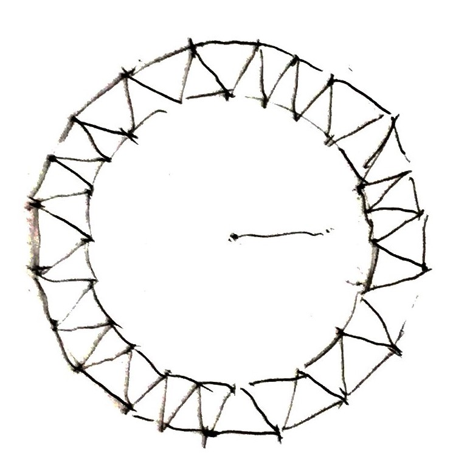

Developed Using
Consists of several disks made up of triangles.

struct FlyingTriangle {
glm::vec3 position;
glm::vec3 edge1;
glm::vec3 edge2;
glm::vec2 normXNoise;
glm::vec2 normYNoise;
glm::vec2 normZNoise;
glm::vec2 distNoise;
};
auto dist = getNoise(tri.distNoise + sample);
dist = glm::lerp(0.0f, dist, t);
glm::vec3 normal;
normal.x = getNoise(tri.normXNoise + sample);
normal.y = getNoise(tri.normYNoise + sample);
normal.z = ofNoise(tri.normZNoise + sample);
normal = glm::normalize(normal);
normal = glm::slerp(zAxis, normal, t);
auto position = tri.position + normal * dist * 40;
auto rot = glm::rotation(zAxis, normal);
auto edge1 = glm::rotate(rot, tri.edge1);
auto edge2 = glm::rotate(rot, tri.edge2);
glm::vec2 sample = glm::rotate(glm::vec2(1, 0), angle);
//...
normal.x = getNoise(tri.normXNoise + sample);
normal.y = getNoise(tri.normYNoise + sample);
normal.z = ofNoise(tri.normZNoise + sample);